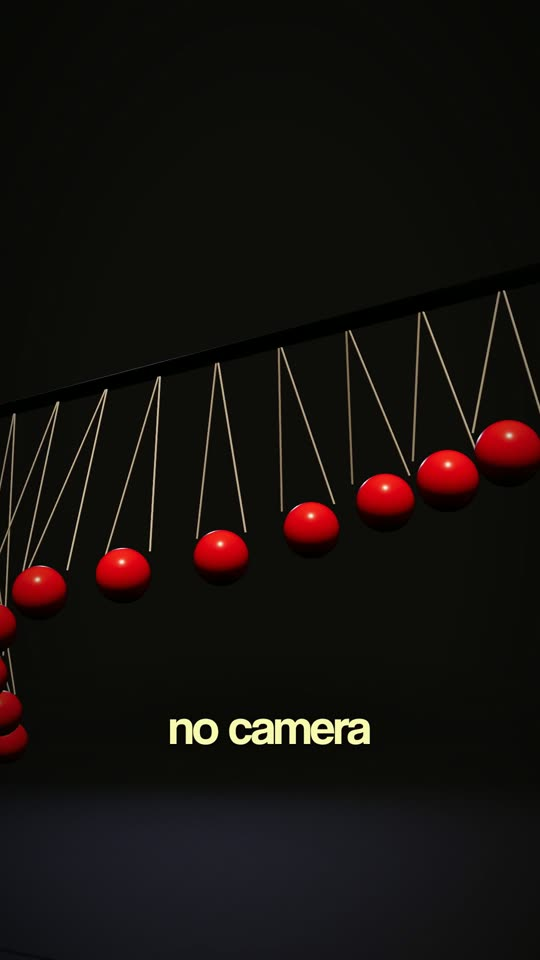
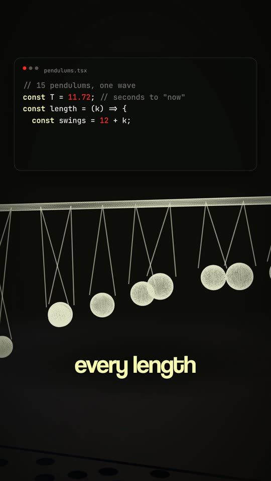
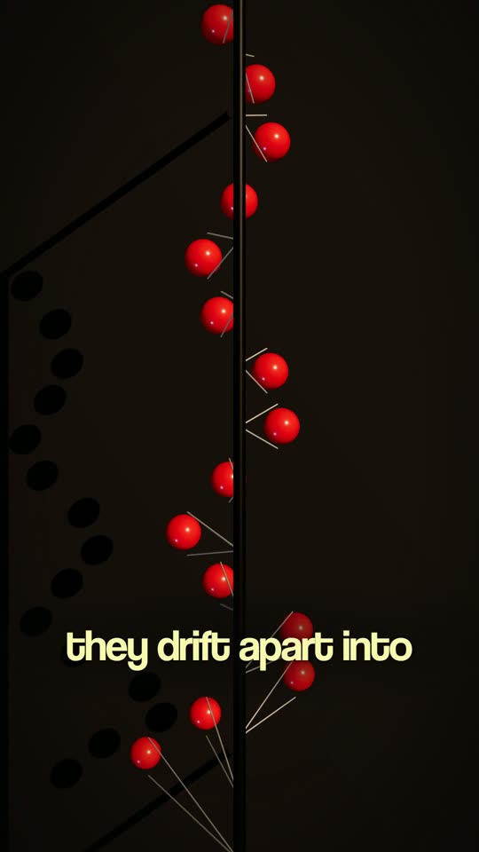
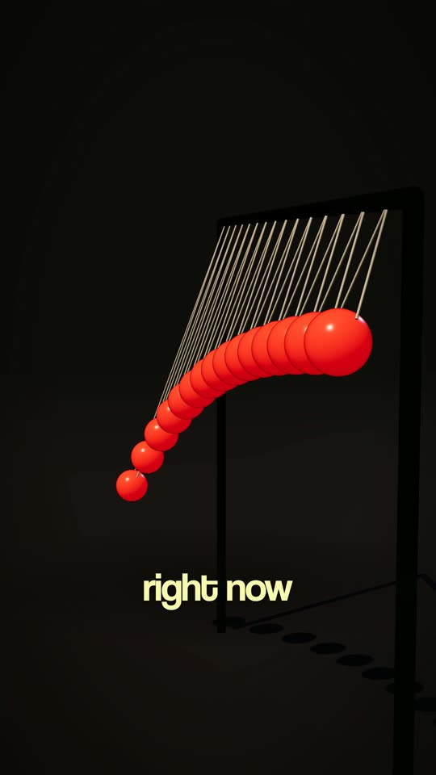

Free prompt pack · all of it
15 pendulums.One word.
Nothing in this video was filmed or generated by a video model. Fifteen pendulums, each string a little shorter, timed so they all line up again on the word "now". Every frame is code, and it cost 0 credits.
Here are the four prompts, ready to paste into Claude Code. Each prompt hangs behind a row of pendulums. Let them go and wait for them to line up. The ones behind this page are the real ones.
The voice is the clock
"Now" lands at 11.32 s. Clone a voice from a few seconds of clean audio, one file per line, then get the start of every word. The whole wave is timed to one of them.
Watch out
Clone from the raw clip, not an edited video. Its background got cloned into every line and the audio seemed to cut out.
Fragments

The prompt 236 words
Make me a voiceover in my own voice with Chatterbox, the free open-source voice cloning model that runs on my computer. Install it in its own environment if it isn't there. REFERENCE Take 6 to 10 seconds of me talking with nothing else in the audio (no music, no effects) from the raw file I give you, not from an edited video: any background in the reference gets cloned into the voice. Mono, 24 kHz. LINES 1. "No camera." 2. "No AI video model." 3. "Fifteen pendulums, each one a little shorter." 4. "Claude worked out every length, to the millimeter." 5. "They drift apart into waves," 6. "and line up again, right now." 7. "Comment wave, and I'll send you the prompt." Generate each line on its own, with a fixed seed so I can regenerate one line without the others changing. Trim the silence at both ends, then fade in 25 ms and out 60 ms, and run a light denoise on every line. TIMELINE Place the lines one after another with these gaps before each: 0.15, 0.2, 0.45, 0.4, 0.6, 0.3 and 0.6 seconds. WORD TIMES Run faster-whisper with word timestamps on every line and write one file with the start and end of every word on the global timeline, using my script's words. Everything else is timed to those words, above all the word "now": that's when the pendulums line up again.
Work out every length
12 swings for the longest, 26 for the shortest. Pendulum k swings 12 + k times between the release and "now". Its period fixes its length, to the millimetre.
- -0.4 sAll let go together
- 5.5 sTwo lines, half a swing apart
- "now"All fifteen back in line
Watch out
L = 9.81 × (period ÷ 2π)². From 237.0 mm down to 50.5 mm.
Fragments

The prompt 279 words
Write a script that works out a pendulum wave timed to my voiceover. Read the word timings first: the time of the word "now" is the only number you take from outside. THE WAVE 15 pendulums hanging from one bar. They are all let go together, 0.4 s before the video starts, and must all be back in line exactly on "now". Call T the time from the release to "now" (with my voice, 11.72 s). Pendulum k (0 to 14) makes 12 + k complete swings in T. So its period is T / (12 + k), and the longest one swings about once a second. Its length comes from the simple pendulum: L = 9.81 x (period / 2π)². Print every length in millimetres. With my voice they go from 237.0 mm down to 50.5 mm. Angle of pendulum k at time t: 20 degrees x cos(2π (t - release) / period). No damping. Halfway through they split into two lines, in between they make snakes and waves, and on "now" every one of them is back at the same angle. SOUND Each ball plays its own note every time it reaches the front of its swing: a soft marimba-like tone, mostly the fundamental, a quiet 4th harmonic that dies fast, a 6 ms attack. Pentatonic scale from A 220 Hz, the longest pendulum lowest. On "now" all fifteen hit at once and make one chord. Keep the notes well under the voice. They play the whole video, so they also fill the gaps between lines. Save the lengths, periods and the release time to a file the scene imports, so there is one source of truth.
Five shots, hard cuts
Every cut on the first word of a line. Low at the balls, from the side, the code in wireframe, straight down for the snake, and end-on for the line-up.
- "They"From above: the snake
- "and"End-on, short side
- "now"One curve, a flash
Watch out
End-on is the shot that sells it: in line, every ball falls on one curve.
Fragments


The prompt 304 words
Build the video in Remotion with @remotion/three: 1080 x 1920, 30 fps, as long as the voice plus 0.6 s. Read every length and period from the pendulum file and use exactly its angle formula. LOOK Dark warm floor (#1B1815), background and fog #0E0C0B. A dark metal frame: one horizontal bar and two posts. Each ball is glossy red (#FF2A1F, clearcoat) and hangs from two thin cream strings in a V, so it can only swing in one plane, towards and away from the camera. One warm key light from high on one side with soft shadows, a weak cool fill from the other. SHOTS, hard cuts only, each one on the first word of a line 0 to "Fifteen": low, three-quarter from the front, close to the short pendulums, so the balls swing at the lens. "Fifteen" to "Claude": from the side, slowly turning, so you see the lengths step down. "Claude" to "They": the same move in wireframe, cream on dark. A code panel slides up at the top and the length formula types in one line at a time, ending with the real shortest and longest lengths. "They" to "and": straight down from above, the bar running top to bottom of the frame, so the balls draw a snake. "and" to the end: from the end of the row, on the short side. When they line up, every ball falls on one curve. On "now" the balls glow for a fraction of a second. END On "Comment", an Instagram-style comment box with my profile photo fades up above the subtitles and the word WAVE types into it. SOUND The voice lines at their times, a very quiet continuous room tone so there is never digital silence, and the note track at one constant level. No music, I add it in Instagram.
Letters that almost touch
Coolvetica, 100 px, -0.03 em. One short line at a time, lowercase, cream, a soft shadow and nothing else. Words not said yet keep their space.
Watch out
From above, a red ball swings under the text: 1.8:1. A dark ellipse behind the line took it to 4.9:1.
The prompt 199 words
Add word-by-word subtitles that look exactly like these, from the voiceover word timings. TYPE Coolvetica regular (free from Typodermic), 100 px on a 1080-wide frame, colour #F8F8B0. Letter spacing -0.03 em, so the letters almost touch. Add the same amount as text-indent so the line stays centred. Soft shadow straight down, no outline, no box: 0 3px 5px rgba(0,0,0,0.45), 0 1px 14px rgba(0,0,0,0.30). The centre of the line sits at 75.6% of the frame height. TEXT All lowercase except "I" and acronyms like AI. No punctuation on screen. Short lines: break at punctuation, at 4 words or 22 characters, or at a pause longer than 0.45 s. Never leave the last word of a sentence alone on a line. Words that haven't been said yet take their space but stay invisible, so the line never shifts as it fills in. Each line stays until the next one starts. READABILITY Measure it: render the same frame with and without the letters, take the background under them, and check every line is at least 4.5:1. Where it isn't (a red ball swinging under the line in the top-down shot), put a soft dark ellipse behind the line in those shots only.
Rule 01
One number from outside
The time of "now" is the only number that isn't calculated. Change the voice and every length changes with it.
Rule 02
Let the sound fill the gaps
The notes play the whole video at one level. Between lines there is never silence, so nothing seems to cut out.
Rule 03
Turn it down
Fifteen notes a second is a lot. Keep them far under the voice and soften the high harmonic, or it clips.
That's every prompt
Your turn.Let them go.
Paste them into Claude Code in order: voice, pendulums, scene, subtitles. If yours line up on a different word, send it over. I read every DM.
@martiifons